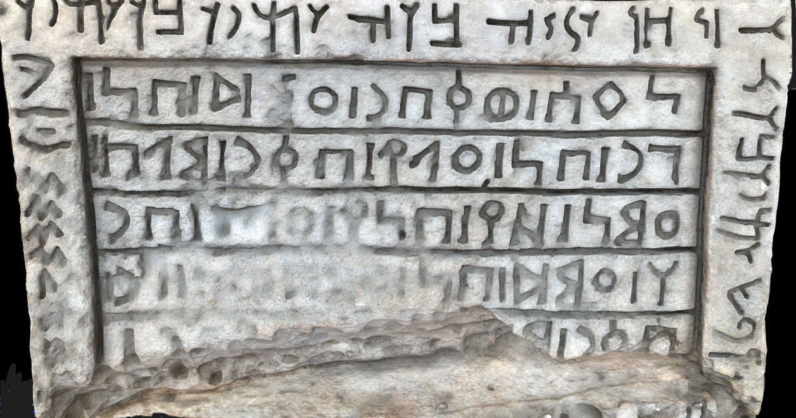
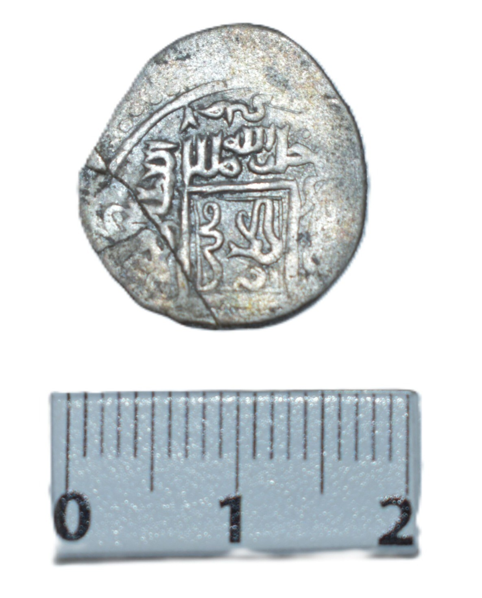
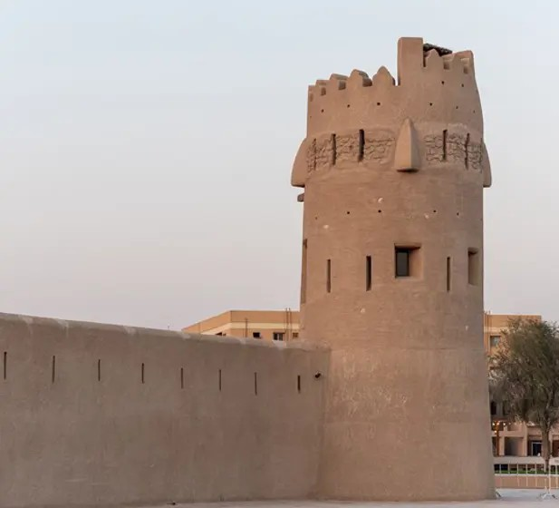
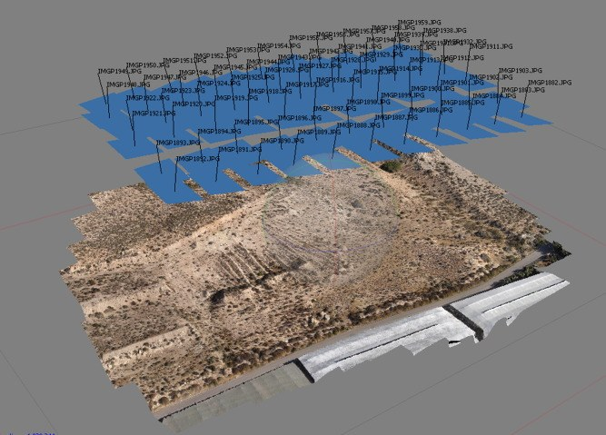
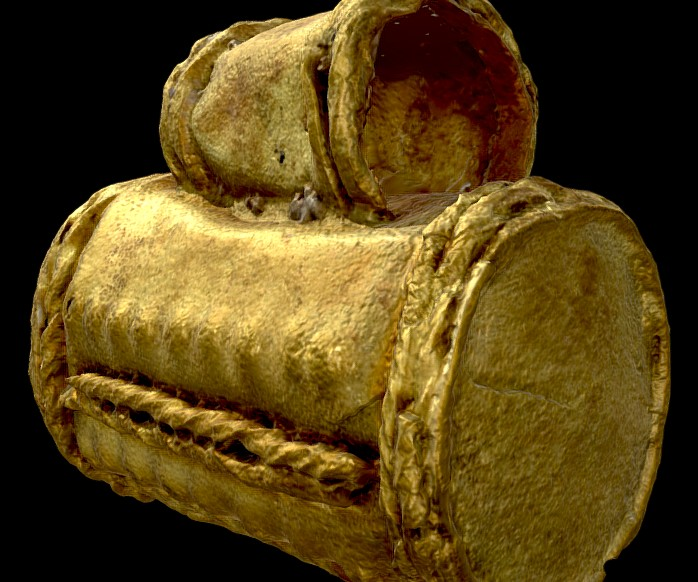

نموذج لغوي يعيد بناء الأحرف المفقودة من النقوش، ويرجّح موطن الكتابة وحقبتها الزمنية — ليبقى النص شاهدًا يُقرأ لا حجرًا يُخمَّن.

تُوصَف القطعة آليًا وتُقاس وتُفهرس، فيصل الباحث إلى سجله الكامل قبل أن يفتح صندوق الحفظ.

مسح ثلاثي الأبعاد يحوّل الموقع إلى توأم رقمي يبقى بعد أن يغيّره الزمن، وتقارنه السنوات ببعضها على مستوى الملّيمتر.

